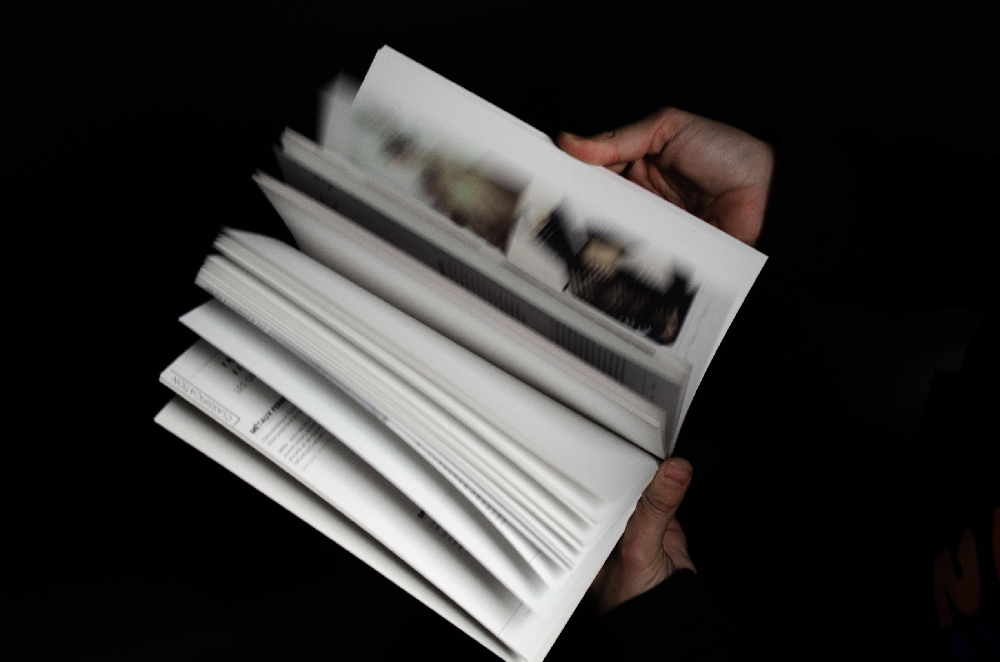
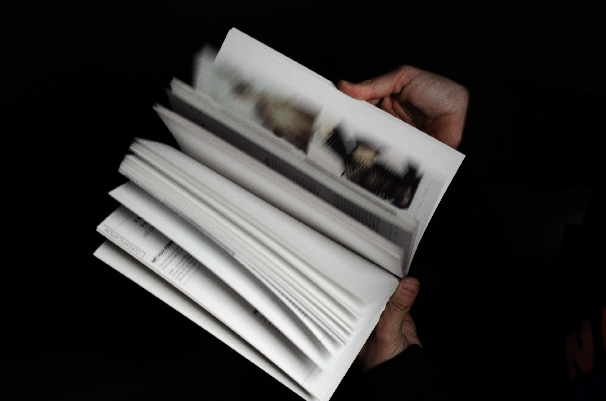
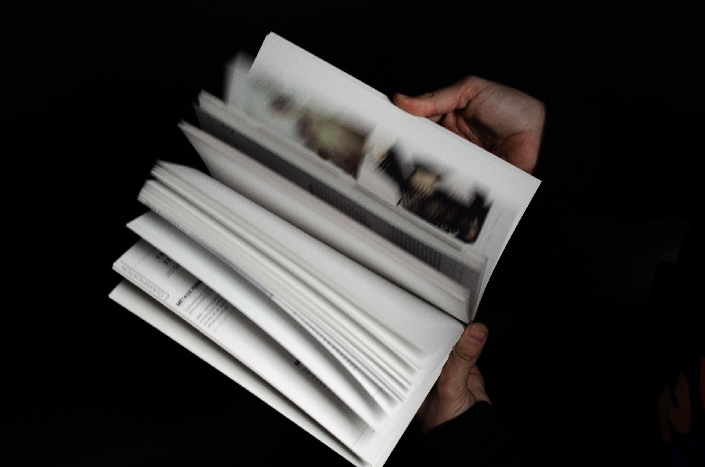

Comment l’objet livre peut-il servir à classer un contenu textuel ? C’est la question que je me suis posée lors de cet approfondissement de la technique de reliure. En retraçant mes expériences de voyage en Italie, en Grèce et en Inde, j’ai cherché à traduire, à travers la composition textuelle, les jeux de textures et les ajours, une immersion sensorielle permettant au lecteur de plonger au cœur de ces pays tels que je les ai vécus. La reliure, réalisée avec un dos cousu copte et une finition à bord vif pour la couverture, confère un aspect artisanal et traditionnel au carnet de voyage. Cette tension entre le contenant et le contenu accentue l’effet de surprise à l’ouverture, offrant une expérience riche et inattendue.
How can the book as an object help organize textual content? This was the question I explored while delving into the art of bookbinding. Retracing my travel experiences in Italy, Greece, and India, I aimed to evoke, through textual composition, textures, and cutouts, a sensory immersion that allows readers to dive into these countries as I experienced them. The binding, featuring a Coptic stitched spine and raw edge finishes for the cover, lends a traditional, handcrafted feel to the travel journal. This interplay between form and content heightens the element of surprise upon opening, offering a rich and unexpected experience.
Septembre 2024 - Projet de 2e année de DnMade.
